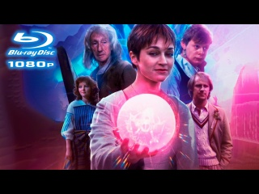
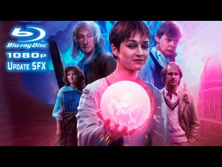
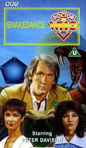
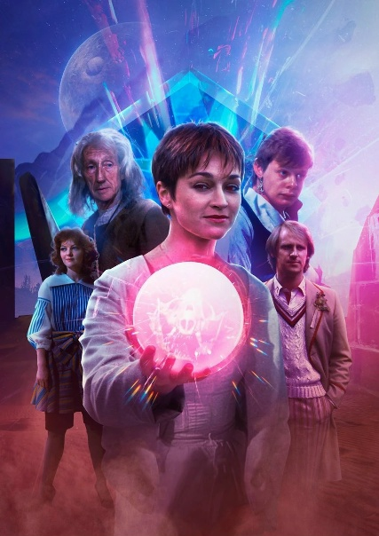

Субтитры: Русские и Английские |  |
|---|---|
с обновленными спецэффектами (эпизод 4) Субтитры: Русские и Английские |  |
с обновлением визуальных эффектов (cunningmunki) Субтитры: отсутствуют | над серией] |
Snakedance
Дата выхода: 18-26 января 1983
Формат: 4 эпизода по 25 мин.
| |
Прямое продолжение «Кинды». Тиган мучают кошмары со времён Дэва Локи — Мара не исчезла, а затаилась в её подсознании. Под влиянием Мары Тиган незаметно направляет ТАРДИС на Мануссу — родину существа, где как раз празднуют пятисотлетие его изгнания. Доктор пытается предупредить местных о надвигающейся опасности, но никто не воспринимает его всерьёз.
Кристофер Бейли снова использовал буддийские термины: Манусса — «человеческое царство», Танха — «жажда». Мартин Клунз, тогда начинающий актёр, сыграл Лона — и потом всю жизнь стеснялся этой роли. Брайан Миллер, сыгравший шоумена Дагдейла, — муж Элизабет Слейден. Стивен Моффат называл эту серию своей любимой из всего классического «Доктора Кто». А четвёртый эпизод настолько вышел за хронометраж, что сцену, где Доктор утешает Тиган, перенесли в начало следующей серии.
 VHS - декабрь 1994 | DVD+Boxset - 7 марта 2011 |  Blu-ray - 18 сентября 2023 * Версия в нашей группе |
|---|
